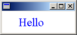
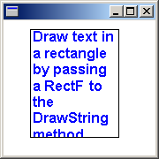

You can use the DrawString method of the Graphics class to draw text at a specified location or within a specified rectangle.
To draw text at a specified location, you need Graphics, FontFamily, Font, PointF, and Brush objects.
The following example draws the string "Hello" at location (30, 10). The font family is Times New Roman. The font, which is an individual member of the font family, is Times New Roman, size 24 pixels, regular style. Assume that graphics is an existing Graphics object.
FontFamily fontFamily(L"Times New Roman");
Font font(&fontFamily, 24, FontStyleRegular, UnitPixel);
PointF pointF(30.0f, 10.0f);
SolidBrush solidBrush(Color(255, 0, 0, 255));
graphics.DrawString(L"Hello", -1, &font, pointF, &solidBrush);
The following illustration shows the output of the preceding code.

In the preceding example, the FontFamily constructor receives a string that identifies the font family. The address of the FontFamily object is passed as the first argument to the Font constructor. The second argument passed to the Font constructor specifies the size of the font measured in units given by the fourth argument. The third argument specifies the style (regular, bold, italic, and so on) of the font.
The DrawString method receives five arguments. The first argument is the string to be drawn, and the second argument is the length (in characters, not bytes) of that string. If the string is null-terminated, you can pass –1 for the length. The third argument is the address of the Font object that was constructed previously. The fourth argument is a PointF object that contains the coordinates of the upper-left corner of the string. The fifth argument is the address of a SolidBrush object that will be used to fill the characters of the string.
One of the DrawString methods of the Graphics class has a RectF parameter. By calling that DrawString method, you can draw text that wraps in a specified rectangle. To draw text in a rectangle, you need Graphics, FontFamily, Font, RectF, and Brush objects.
The following example creates a rectangle with upper-left corner (30, 10), width 100, and height 122. Then the code draws a string inside that rectangle. The string is restricted to the rectangle and wraps in such a way that individual words are not broken.
WCHAR string[] =
L"Draw text in a rectangle by passing a RectF to the DrawString method.";
FontFamily fontFamily(L"Arial");
Font font(&fontFamily, 12, FontStyleBold, UnitPoint);
RectF rectF(30.0f, 10.0f, 100.0f, 122.0f);
SolidBrush solidBrush(Color(255, 0, 0, 255));
graphics.DrawString(string, -1, &font, rectF, NULL, &solidBrush);
Pen pen(Color(255, 0, 0, 0));
graphics.DrawRectangle(&pen, rectF);
The following illustration shows the text drawn in the rectangle.

In the preceding example, the fourth argument passed to the DrawString method is a RectF object that specifies the bounding rectangle for the text. The fifth parameter is of type StringFormat— the argument is NULL because no special string formatting is required.